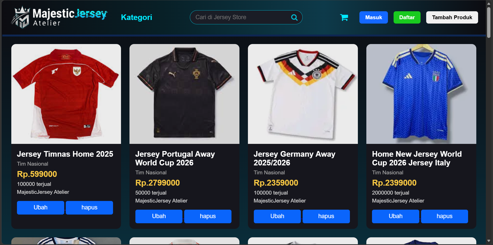
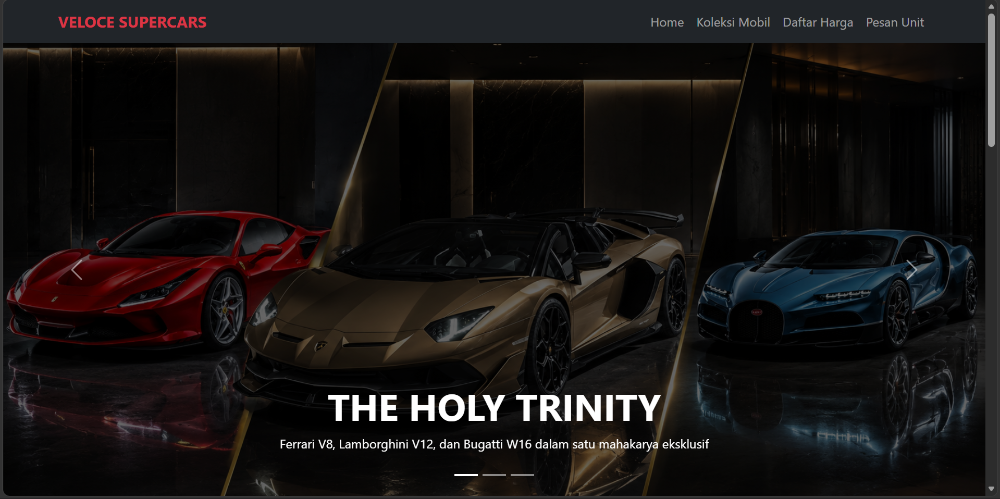
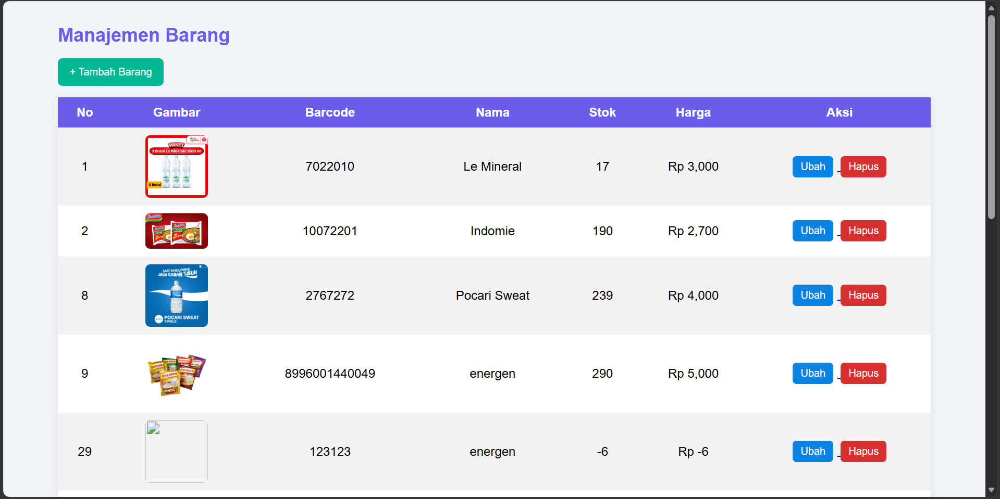

Tentang Saya
Saya adalah seorang siswa SMK jurusan RPL yang masih belajar tentang pemahaman teknis dalam pengembangan web dasar serta pengelolaan basis data. Selain dunia teknologi, saya juga memiliki ketertarikan dalam menganalisis detail spesifikasi perangkat keras/gadget serta dunia olahraga. beradaptasi dengan alur kerja digital, dan terbuka untuk eksplorasi di berbagai bidang baru.
# Semoga Sukses :)
Belajar coding itu seperti menyusun sirkuit — satu bagian salah, semuanya harus dirunut ulang dari awal.
Keahlian
Riwayat Pendidikan
Proyek Pilihan

Toko Jersey — Majestic Jersey Atelier
Platform katalog toko jersey sepak bola interaktif dengan fitur pencarian, filter kategori, manajemen produk (CRUD), serta antarmuka modern yang responsif.
Buka di localhost ↗
Toko Mobil — Veloce Supercars
Website landing page showcase mobil mewah modern dengan fitur hero banner carousel, navigasi transparan, serta daftar katalog supercars yang elegan.
Buka di localhost ↗
Sistem Kasir — Manajemen Barang
Aplikasi manajemen barang untuk sistem kasir: pencatatan stok, harga, dan barcode produk, dengan fitur tambah, ubah, dan hapus data.
Buka di localhost ↗